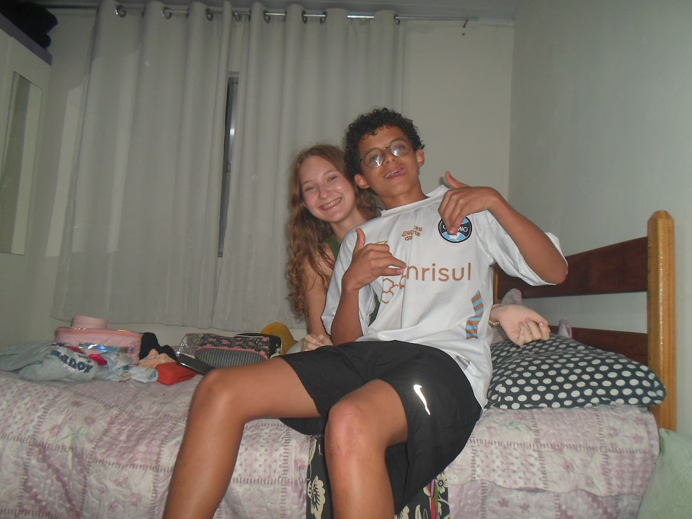
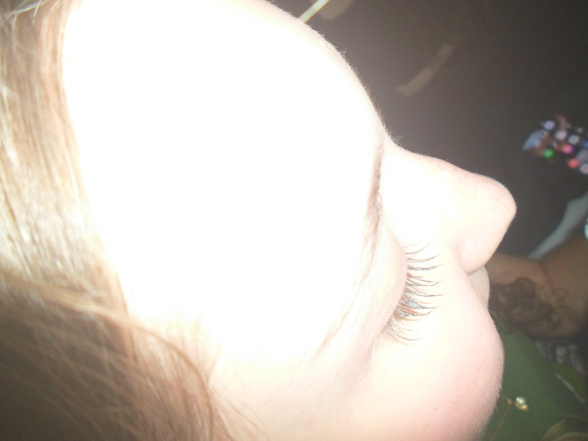
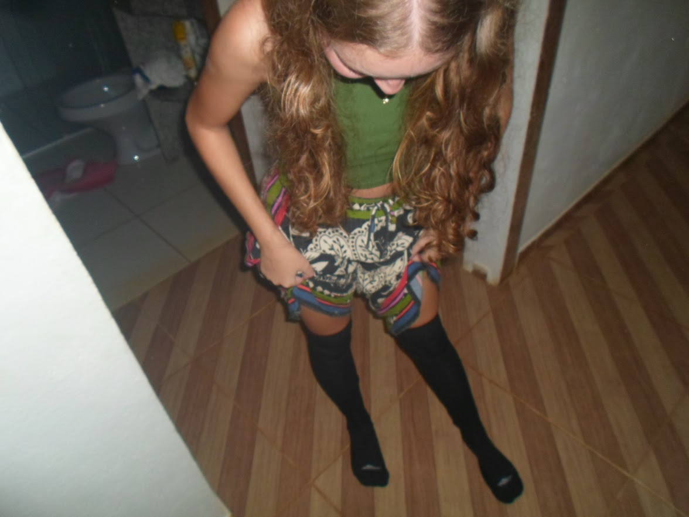
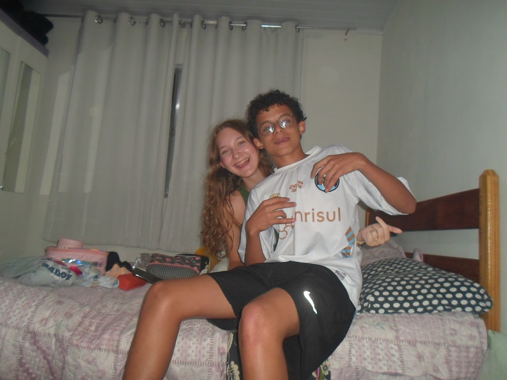
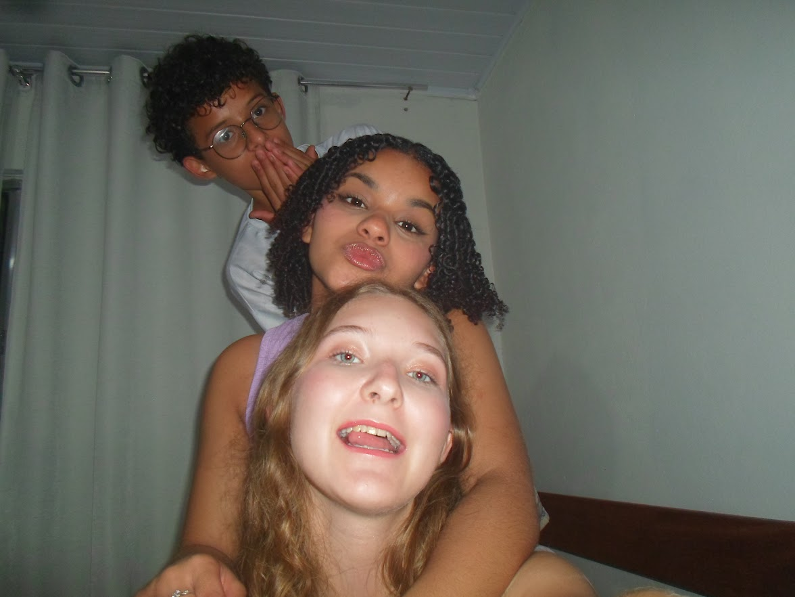
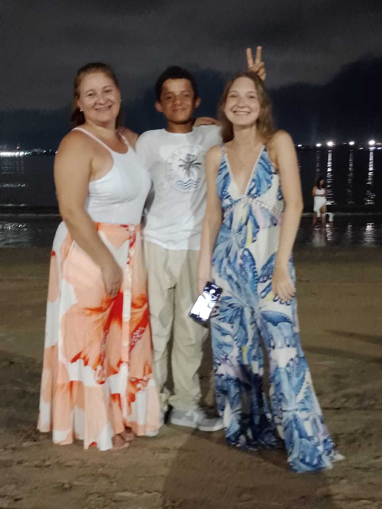

Desculpe por te entregar depois. Eu queria ter entregado antes.
Anos
Meses
Dias
Horas
Minutos
Segundos






Sinceramente, quando chegou a hora de escolher minha madrinha de Crisma, até pensei em algumas pessoas. Mas, no fundo, tinha uma pessoa que sempre voltava à minha cabeça: você. Você sempre foi alguém que me tratou muito bem, com esse jeito simpático e divertido que faz qualquer um gostar de ficar por perto. Sempre me senti à vontade com você, como se estivesse conversando com uma amiga de verdade. E isso vale muito mais do que você imagina. Muitas das minhas melhores lembranças envolvem você, sua casa e sua família. Foram vários momentos simples, mas que se tornaram especiais para mim. As conversas, as brincadeiras e o jeito como eu sempre me sentia acolhido são coisas que ficaram guardadas na minha memória. A verdade é que te escolhi porque você sempre foi uma pessoa especial para mim. Alguém que admiro, de quem gosto muito e que marcou vários momentos importantes da minha vida. Por isso, quando precisei escolher uma madrinha, meu coração já sabia a resposta havia muito tempo.
Se tem uma lembrança que guardo com muito carinho, são as férias do ano passado. Foram dias muito especiais que passei com você e com a Gabi. Nós brincamos bastante, gravamos vários vídeos com efeitos diferentes, demos muita risada e vivemos momentos que eu nunca vou esquecer. Também fomos à praia, eu pesquei e aconteceram várias coisas legais durante aqueles dias. Uma coisa que eu gosto muito é que sempre me sinto bem quando estou com vocês. Sempre fui tratado com carinho e me senti acolhido. São momentos simples, mas que ficaram marcados para mim e que vou guardar com muito carinho.
E, por último, quero te agradecer por algo que talvez você nem perceba o quanto foi importante para mim. ❤️ Você sempre me incentivou a estudar programação, a aprender coisas novas e a não desistir quando algo parecia difícil. Foi por causa desse incentivo que comecei a gostar cada vez mais dessa área e a descobrir coisas que nunca imaginei que conseguiria fazer. Este presente também existe por sua causa. Se hoje consigo criar uma página como esta, escrever códigos e transformar ideias em algo real, é porque tive pessoas especiais me apoiando durante o caminho. Por isso, este não é apenas um presente. É uma forma de demonstrar minha gratidão por tudo o que você fez por mim. Talvez seja apenas uma página feita em HTML, mas cada detalhe foi criado com carinho e representa um pouco do quanto sou grato por ter você na minha vida.